Microsoft Word
论文排版——完全指南
系统学习论文排版
详细介绍在Microsoft Word中进行排版论文时，
你需要掌握的基础知识、常用操作，让你少走弯路。
编著
我们使用插入公式的方法，对于一些需要插入大量公式的文章或书籍来说，就显得力不从心。而科学界一般使用LaTeX进行公式输入，但这种方法需要编程，而最主要的是，它同我们看见的不太一样，比如我们输入(a+b)/c这个公式，LaTeX需要这样：
\frac{a + b}{c}
如果你对frac和其他表示运算的符号不懂，就会非常麻烦。
我也一直在寻找这样一个即可以简单输入，所见似所得，而且不需要鼠标一个一个点击的方法。直到我在B站找到一个视频，视频介绍了使用Unicode进行输入的方法，很好地满足了我这一需求。在此表示感谢。
不过，视频中没有介绍全面，比如重积分和矢量符号等，没给出具体的说明，但给了一个参考文档，而我又在网上找到一些常用的数学、物理公式，对其所涉及的知识点进行了归类，下面就教给大家。
我们知道，使用点选的方式，输入公式，无非是输入如下的结构和符号：
符号：希腊字母、字母类符号、运算符、箭头、手写体、求反关系运算符、几何图形。
结构：
| 序号 | 小写 | 英文 | 英语音标注音 | 汉语名称 | 大写 | 常用指代意义 |
|---|---|---|---|---|---|---|
| 1 | α | alpha | /'ælfə/ | 阿尔法 | Α | 角度、系数、角加速度、第一个、电离度、转化率 |
| 2 | β | beta | /'bi:tə/ 或 /'beɪtə/ | 贝塔 | Β | 磁通系数、角度、系数 |
| 3 | γ | gamma | /'gæmə/ | 伽玛 | Γ | 电导系数、角度、比热容比 |
| 4 | π | pi | /paɪ/ | 派 | ∏ | 圆周率、π(n)表示不大于n的质数个数、连乘 |
| 5 | ω | omega | /'əʊmɪɡə/或 /oʊ'meɡə/ | 奥米伽/欧米伽 | Ω | 欧姆、角速度、角频率、交流电的电角度、化学中的质量分数、不饱和度 |
| 6 | θ | theta | /'θi:tə/ | 西塔 | Θ | 温度、角度 |
| 7 | λ | lambda | /'læmdə/ | 拉姆达 | ∧ | 波长、体积、导热系数 普朗克常数 |
| 8 | φ | phi | /faɪ/ | 斐 | Φ | 磁通量、电通量、角、透镜焦度、热流量、电势、直径、欧拉函数 |
| 9 | ρ | rho | /rəʊ/ | 柔 | Ρ | 电阻率、柱坐标和极坐标中的极径、密度、曲率半径 |
| 10 | σ,ς | sigma | /'sɪɡmə/ | 西格马 | ∑ | 总和、表面密度、跨导、应力、电导率 |
| 11 | η | eta | /'i:tə/ | 伊塔 | Η | 迟滞系数、机械效率 |
| 12 | μ | mu | /mju:/ | 谬 | Μ | 磁导率、微、动摩擦系（因）数、流体动力黏度、货币单位,莫比乌斯函数 |
| 13 | δ | delta | /'deltə/ | 得尔塔 | Δ | 变化量、焓变、熵变、屈光度、一元二次方程中的判别式、化学位移 |
| 14 | τ | tau | /tɔ:/ 或 /taʊ/ | 陶 | Τ | 时间常数、切应力、2π（两倍圆周率） |
| 15 | ξ | xi | 希腊 /ksi/英美 /ˈzaɪ/ 或 /ˈsaɪ/ | 克西 | Ξ | 随机变量、（小）区间内的一个未知特定值 |
| 16 | ε | epsilon | /'epsɪlɒn/ | 艾普西隆 | Ε | 对数之基数、介电常数、电容率、应变 |
| 17 | ν | nu | /nju:/ | 纽 | Ν | 磁阻系数、流体运动粘度、光波频率、化学计量数 |
| 18 | υ | upsilon | /ˈipsɪlon/或 /ˈʌpsɪlɒn/ | 阿普西龙 | Υ | 位移 |
| 19 | κ | kappa | /'kæpə/ | 卡帕 | Κ | 介质常数、绝热指数 |
| 20 | χ | chi | /kaɪ/ | 希 | Χ | 统计学中有卡方(χ^2)分布 |
| 21 | ψ | psi | /ps/ | 普西 | Ψ | 角速、介质电通量、ψ函数、磁链 |
| 22 | ι | iota | /aɪ'əʊtə/ | 幺塔 | Ι | 微小、一点 |
| 23 | ζ | zeta | /'zi:tə/ | 泽塔 | Ζ | 系数、方位角、阻抗、相对黏度 |
| 24 | ο | omicron | /əuˈmaikrən/或 /ˈɑmɪˌkrɑn/ | 奥米克戎 | Ο | 高阶无穷小函数 |
- word会自动更正 这里我列举了可以自动更正的符号：也就是不需要任何附加输入，软件会自动更正。
- 重积分 这部分待验证
- 矢量
- 上大括号
- 下大括号
- 居中
- 三点省略
- 编号自动对齐
- 均值
- 无穷
- 副本字符撇号
| 序号 | 自动更正前 | 自动更正后 |
|---|---|---|
| 1 | -> | → |
| 2 | >= | ≥ |
| 3 | <= | ≤ |
| 4 | /= | ≠ |
| 5 | \= | = |
| 6 | ~= | ≌ |
| 7 | -+ | |
| 8 | +- | ± |
| 序号 | 名称 | 欲录入公式 | 输入字符 | 备注 |
|---|---|---|---|---|
| 1 | 横线分数 | a/b | ||
| 2 | 数学除号 | 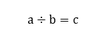 | a\div b=c | |
| 3 | 多段除法 | 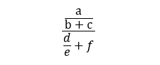 | (a/(b+c))/(d/e+f) | 使用括号进行分组 |
| 4 | 错位除法 | 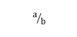 | a\sdiv b | |
| 5 | 正位除法 | 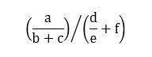 | (a/(b+c)) \ldiv (d/e+f) | |
| 6 | 上下标 | 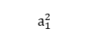 | a_1^2 | |
| 7 | 求和堆叠对象 | 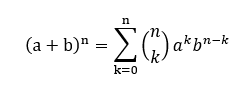 | (a+b)^n =\sum _(k=0)^n (n\atop k )a^kb^(n-k) | |
| 8 | 微积分符号 | 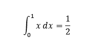 | \int _0^1 x\dd x=1/2 | |
| 9 | 矩阵 | \matrix (a&b&c@d&e&f) | 注意用括号包裹矩阵的内容区域；可以利用矩阵进行对齐 | |
| 10 | 字符串 | 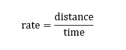 | "rate"="distance"/'time' | 单双引号均可，但一定为西文 |
| 11 | 乘幂号 | 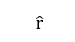 | r\hat | 两次空格 |
| 12 | 绝对值与大括号 | 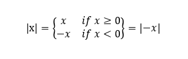 | |x| ={\matrix (x&x>=0@-x&x<0) } =|-x| | |
| 13 | 关闭匹配 | 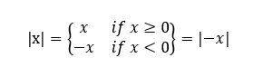 | |x| ={\matrix (x&x>=0@-x&x<0) } \close | |
| 14 | 2~4次根式 |  |
\sqrt (a+b) \cbrt (a+b) \qdrt (a+b) |
|
| 10 | 任意次根式 | 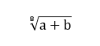 | \sqrt (8&(a+b)) |